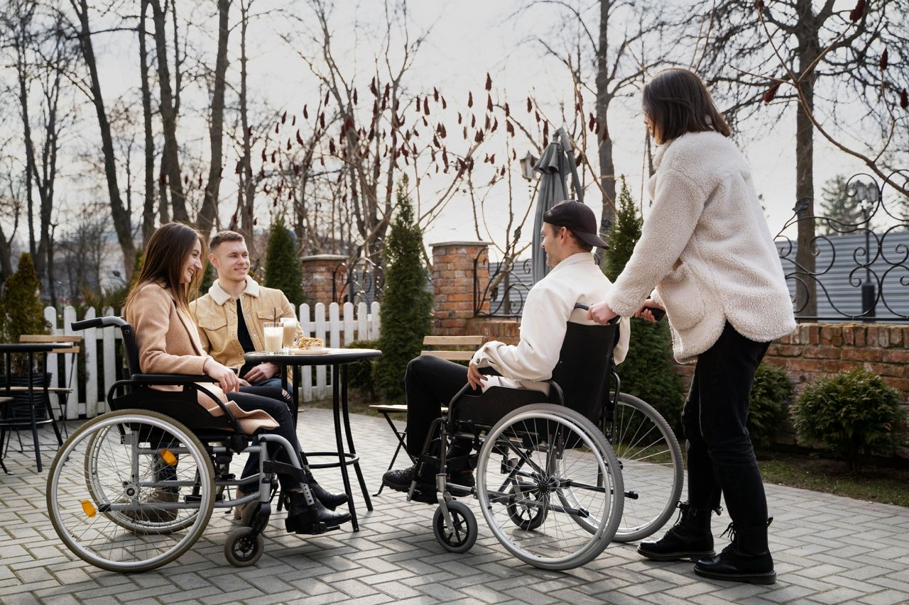
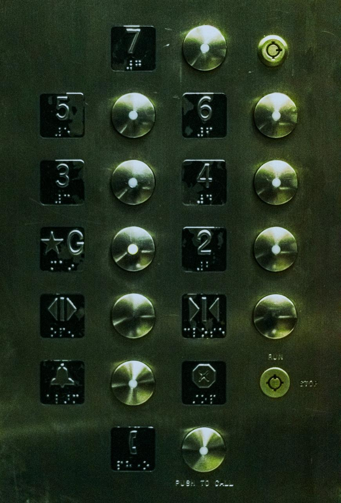

Diseño centrado en el usuario
El concepto diseño centrado en el usuario hace referencia a que todos los diseños de productos deben poder ser utilizados por todas las personas independientemente de su edad, género, nacionalidad o capacidades diferentes.

Los impactos positivos de los negocios inclusivos en la sociedad los clasificamos como sigue:
1. Reducción de la pobreza al: Crear nuevos mercados. Participación conjunta (economía colaborativa). Crear nuevas fuentes de empleo.
2. Bienestar social: Satisfacer las necesidades del usuario. Ayuda a mejorar la calidad de vida. Promueve acciones para dar soluciones efectivas y sin problemas.
3. Impulso a la innovación: Resuelve oportunidades y ayuda a distintos problemas. Cuenta con ideas originales que son benefactoras.
4. Desarrollo de habilidades: Ayuda con el aprendizaje tanto presente como futuro. Fomenta el crecimiento personal tanto profesional.
5. Participación e Inclusión: Ayuda en acoplarse socialmente. Demuestra y comparte capacidades. Integra distintas opiniones.

El Diseño Universal y Diseño Inclusivo son herramientas para resolver problemas sociales, especialmente en temas de discapacidad y accesibilidad

El Diseño Universal
El Diseño Universal busca que productos, servicios y entornos estén pensados desde el inicio para que todas las personas, sin importar sus capacidades, edad o condición, puedan acceder y beneficiarse de ellos.

7 Principios del Diseño Universal:
Uso equitativo: los bienes o servicios deben ser útiles y accesibles para personas con distintas habilidades, evitando exclusiones. Flexibilidad: se adaptan a una amplia gama de preferencias y capacidades individuales. Simplicidad y claridad: el diseño debe ser fácil de entender, sin importar la experiencia o nivel educativo del usuario. Información perceptible: la comunicación del producto o servicio debe ser comprensible por diferentes canales (visual, auditivo, táctil). Tolerancia al error: el diseño minimiza riesgos y consecuencias negativas ante errores de uso. Bajo esfuerzo físico: se busca que el uso no requiera grandes niveles de fuerza o resistencia. Espacio adecuado: considerar dimensiones y accesibilidad para personas con movilidad reducida, sillas de ruedas o acompañantes.

El Diseño Inclusivo
Es práctico: mejora la accesibilidad Es humano: reconoce la dignidad de todos. Es inteligente: lo que sirve a unos termina beneficiando a muchos. Ejemplo: Crosed Caption (CC): Sistema que transcribe el audio de un contenido audiovisual a texto, Permite a personas con discapacidades auditivas acceder y comprender el contenido al igual que a otros espectadores.
